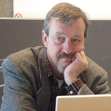

<body>
  <div class="hero">
    <div class="contenido-header">
      <nav class="redes-sociales">
        <a href="http://www.uach.cl"><i class="fas fa-university"></i></a>
        <a href="http://colivares.pythonanywhere.com/inicio/"><i class="fab fa-readme"></i></a>
        <a href="http://www.facebook.com"><i class="fab fa-facebook-f"></i></a>
        <a href="http://tera.uach.cl"><i class="fas fa-globe-americas"></i></a>
        <a href="#"><i class="fab fa-instagram"></i></a>
      </nav>
      <div class="informacion-evento">
        <div class="clear-fix">
          <p class="fecha"><i class="far fa-calendar-alt"></i>{{hoy|date:'dd-MMMM'}}</p>
          <p class="ciudad"><i class="fas fa-map-marker-alt"></i>Valdivia, Chile</p>
        </div>
        <h1 class="nombre-sitio">GoNSA2</h1>
        <p class="slogan"><em>Te invitamos a formar parte de este espacio educativo orientado a la resolución de
            desafíos, mediante la búsqueda y generación de conocimiento.</em> </p>

      </div>

      <div class="ingresar">
        <span class="boton-ingresar" (click)="redireccion()">Ingresar</span>
      </div>
    </div>
  </div>
</body>

<section class="seccion">
  <h2>Frases Celebres</h2>
  <div class="testimoniales contenedor clearfix">
    <div class="testimonial">
      <blockquote>
        <p>Es entendido como el proceso de comprender la <b>discrepancia</b> entre el estado actual y el deseado del
          problema, generar y probar hipótesis para las causas del problema, buscar alternativas y generar <b>soluciones</b>
          al estado objetivo del problema.</p>
        <footer class="info-testimonial clearfix">
          
          <cite>W. Hung, D. Jonassen y R. Lius <span>Investigadores</span></cite>
        </footer>
      </blockquote>
    </div>

    <div class="testimonial">
      <blockquote>
        <p>Es la habilidad de descubrir ideas o productos, los que son <b>nuevos, sorprendentes y valiosos</b>. A
          estas ideas o productos se puede llegar a través de nuevas combinaciones de conceptos, de la exploración de
          formas de pensar o transformando conceptos o materiales.</p>
        <footer class="info-testimonial clearfix">
          
          <cite>M. Boden <span>Investigador</span> </cite>
        </footer>
      </blockquote>
    </div>
  </div>
</section>
